1. วิกฤตการแตกร้าวของสะพาน Plank Girder รุ่นเก่า
สะพานช่วงความยาว 5 ถึง 10 เมตรเป็นโครงสร้างที่ถูกสร้างและใช้งานมากที่สุดในโครงข่ายทางหลวงทั่วประเทศ แต่สะพานรุ่นก่อนปี พ.ศ. 2558 กำลังเผชิญความเสียหายอย่างหนัก
ทำไมสะพาน Plank Girder จึงเป็นที่นิยม?
สะพานประเภท Plank Girder หล่อสำเร็จจากโรงงานได้ปริมาณมาก ควบคุมคุณภาพได้ดี ก่อสร้างได้รวดเร็ว และน้ำหนักเบา จึงนิยมใช้ในสะพานข้ามคลองและทางระบายน้ำทั่วประเทศกว่าหลายพันแห่ง
กลไกการเกิดความเสียหาย (Failure Mechanism)
- Shear Key ขนาดเล็กและห่าง: มาตรฐานเดิมปี พ.ศ. 2537 มีร่องคีย์ขนาดเล็ก พื้นที่ยึดเกาะน้อย
- รอยแตกเริ่มจากผิวสัมผัส: ล้อรถบรรทุกหนักวิ่งกระแทกซ้ำๆ ทำให้รอยต่อระหว่างแผ่นคานแยกตัว
- รอยร้าวทะลุผิวบน (Reflective Crack): คอนกรีตทับหน้าด้านบนรับภาระสูง เกิดการล้าและรอยร้าวทะลุขึ้นถึงผิวจราจร เกิดน้ำรั่วซึม สนิม และโครงสร้างสูญเสียการถ่ายแรง
ข้อจำกัดของวิธีแก้ไขแบบเดิม
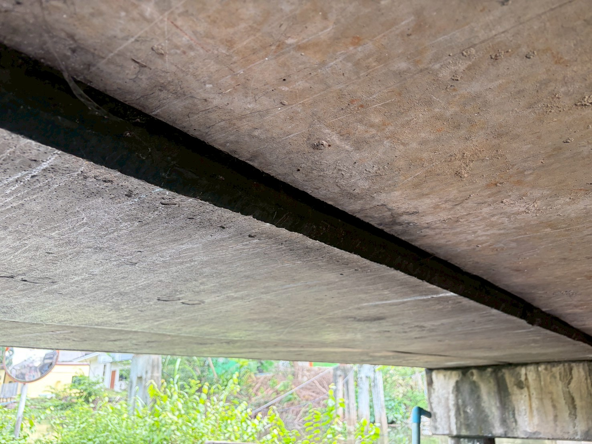
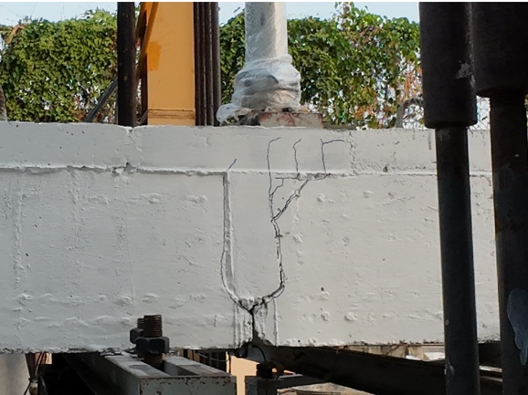
น้ำและเกลือซึมผ่านรอยต่อกัดกร่อนเหล็ก
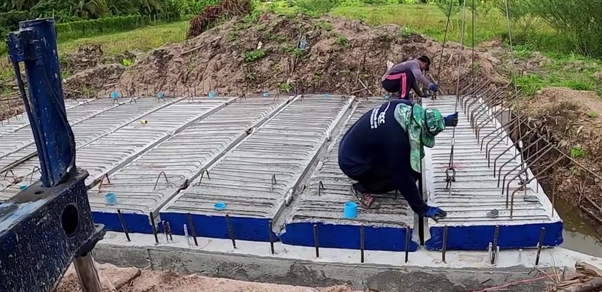
สะพาน Plank Girder ทั่วประเทศ
2. เทคโนโลยีคอนกรีตสมรรถนะสูงพิเศษ (UHPC) กรมทางหลวง
ออกแบบสถาปัตยกรรมโครงสร้างจุลภาคใหม่ทั้งหมด กำจัดมวลรวมหยาบ ใช้ซิลิกาฟูมอนุภาคนาโน และเสริมเส้นใยเหล็ก 1.5% Vol.
ปราศจากมวลรวมหยาบ
ตัด "หินเบอร์" ที่เป็นจุดกำเนิดรอยร้าวในคอนกรีตดั้งเดิมออกทั้งหมด แทนที่ด้วยทรายซิลิกาคัดขนาดและผงควอตซ์ละเอียด สร้างเนื้อสารที่เป็นเนื้อเดียวกันสูง (Homogeneous Matrix)
ซิลิกาฟูมอุดช่องว่างนาโน
ใช้ซิลิกาฟูมที่มีขนาดเล็กกว่าอนุภาคปูนซีเมนต์ถึง 100 เท่า แทรกตัวในช่องว่าง (Micro-filler Effect) และทำปฏิกิริยาปอซโซลานสร้าง C-S-H Gel แน่นทึบจนรูพรุนเกือบเป็นศูนย์ (Near-Zero Porosity)
เส้นใยเหล็ก 1.5% Vol.
ผสมเส้นใยเหล็กความแข็งแรงสูง (Micro Steel Fibers) ทำหน้าที่เป็น "สะพานยึดรอยร้าว" (Crack Bridging) เปลี่ยนพฤติกรรมจากวัสดุเปราะเป็นวัสดุเหนียว ไม่วิบัติฉับพลันภายใต้แรงเฉือน
ดัดแปลงเครื่องผสมปูนฉาบหน้างานสู่ "โรงงานผลิต UHPC เคลื่อนที่"
ความท้าทายของ UHPC คือความหนืดสูงมาก ต้องการกำลังในการกวนมหาศาล โครงการวิจัยได้ทำการดัดแปลงระบบส่งกำลังของเครื่องผสมปูนฉาบหน้างานทั่วไป จากระบบไฟ 1 เฟส ให้เป็นระบบไฟ 3 เฟส ทำให้เครื่องมีกำลังกวนเสถียรและต่อเนื่อง
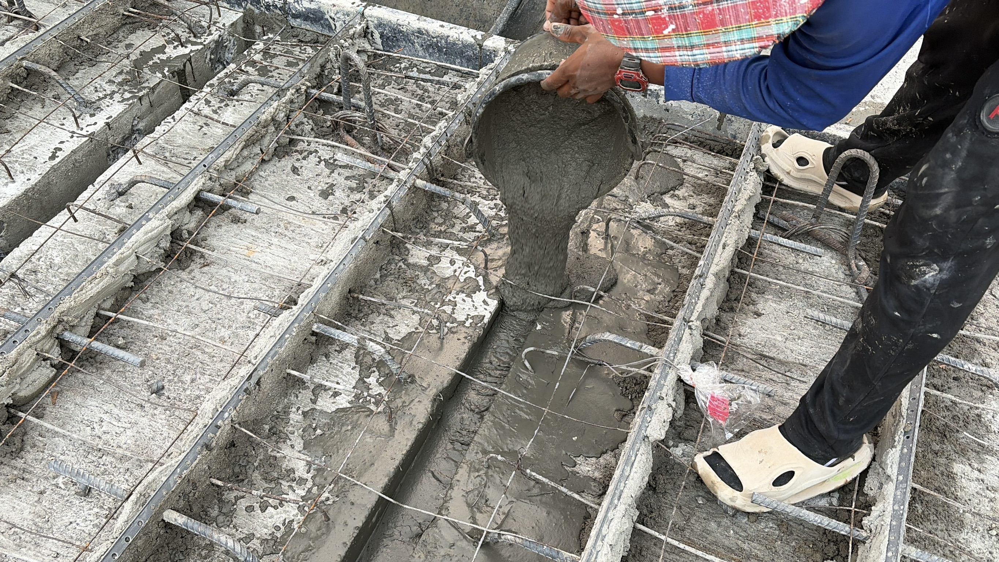
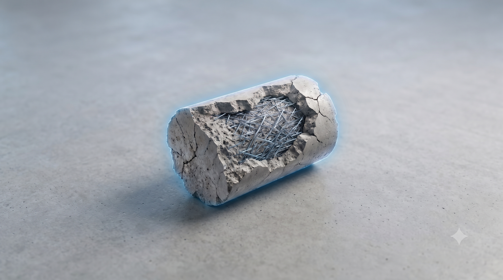
3. การทดสอบรอยต่อจำลองขนาดเท่าของจริง (Full-Scale Models)
สร้างชิ้นงานจำลองตามมาตรฐานสะพาน Plank Girder ปี 2537 รวม 96 แผ่น ทดสอบเปรียบเทียบ 3 วัสดุ: คอนกรีตปกติ (NC), Non-shrink Grout, และ UHPC
ชุดทดสอบที่ 1: ช่วงความยาว 5.00 เมตร
แผ่นคาน Plank Girder หนา 16 ซม. + คอนกรีตทับหน้า 10 ซม. (ความหนารวม 26 ซม.)
ชุดทดสอบที่ 2: ช่วงความยาว 10.00 เมตร
แผ่นคาน Plank Girder หนา 35 ซม. + คอนกรีตทับหน้า 10 ซม. (ความหนารวม 45 ซม.)
ผลการทดสอบแรงกดสถิตสูงสุด (Static Test)
เมื่อให้แรงกดเพิ่มขึ้นเรื่อยๆ จนกระทั่งวิบัติ พบความแตกต่างของพฤติกรรมการถ่ายแรงอย่างสิ้นเชิง:
เปรียบเทียบกำลังรับแรงอัด (Compressive Strength - MPa)
28 Days*UHPC ของกรมทางหลวงให้กำลังอัด 120 MPa สูงกว่าคอนกรีตปกติถึง 4.8 เท่า และสูงกว่า Grout ทั่วไป 2 เท่า
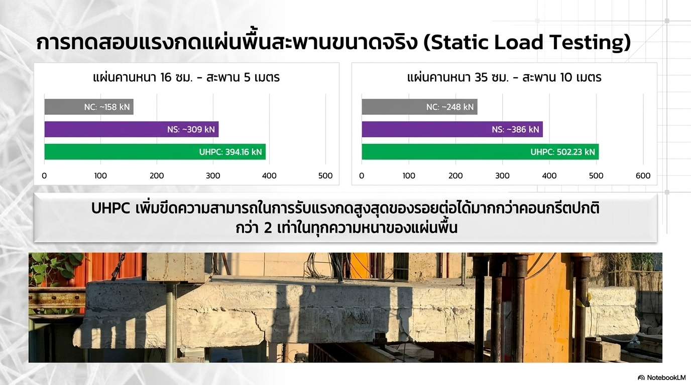
ชุดทดสอบแรงสถิต Full-Scale
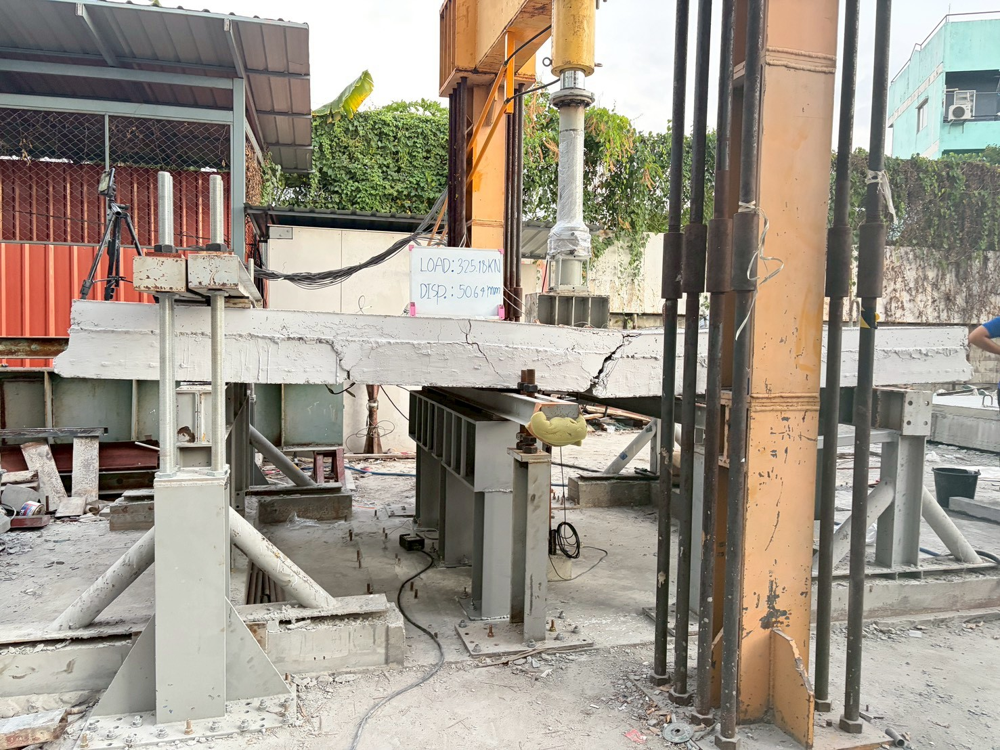
รอยร้าวคอนกรีตปกติ (ทะลุผิว)
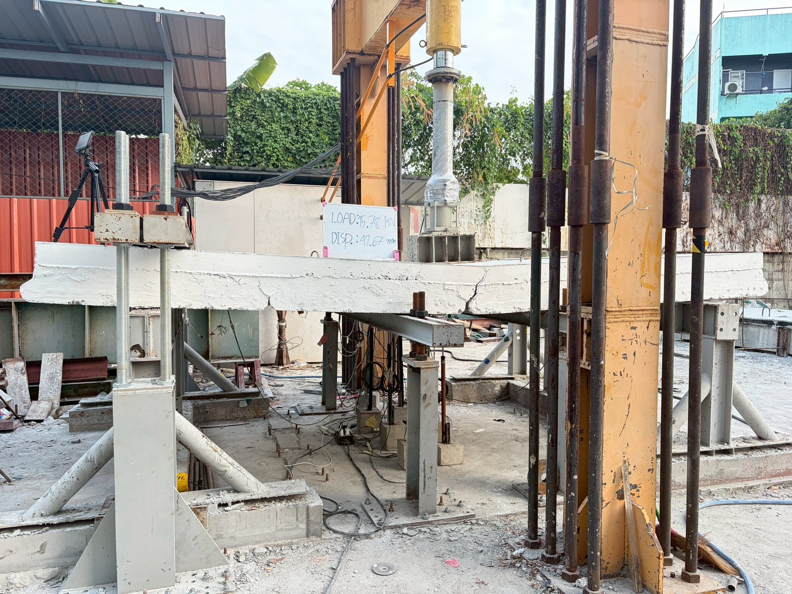
รอยร้าว UHPC (เส้นใยยึดรัดแน่น)
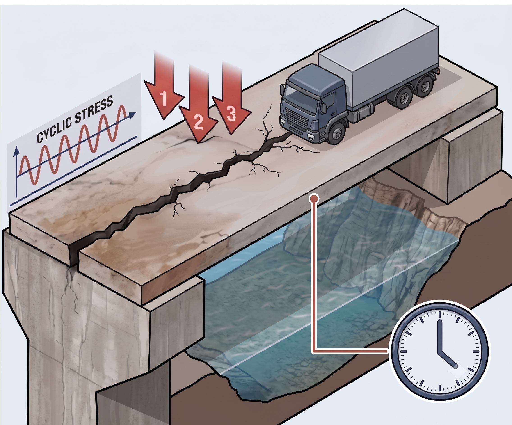
เครื่องทดสอบแรงกดซ้ำ (ความล้า)
4. การทดสอบกำลังต้านทานความล้า (Cyclic Fatigue) และอายุการใช้งาน
จำลองแรงกดซ้ำจากการจราจรของล้อรถบรรทุกหนักวิ่งผ่านสะพานจริงตลอดอายุการใช้งาน ทดสอบที่แรงวัฏจักร 50% Pu และ 70% Pu
ผลการทดสอบกำลังต้านทานความล้าของรอยต่อสะพาน (จากห้องปฏิบัติการจริง)
Slide 14 Reference Data| ขนาดชิ้นงานทดสอบ | ระดับแรงกดซ้ำ | วัสดุอุดรอยต่อ | จำนวนรอบที่วิบัติ (Cycles) | อัตราความทนทาน |
|---|---|---|---|---|
| Plank Girder หนา 16 ซม. (สะพานช่วง 5.00 ม.) |
80 kN (0.50 Pu) |
คอนกรีตปกติ (NC) | 500 รอบ | 1.0x (เกณฑ์อ้างอิง) |
| Non-shrink Grout | 36,414 รอบ | 72.8x | ||
| UHPC (สูตรโครงการ) | > 149,120 รอบ (ยังไม่วิบัติ!) | > 298.2x | ||
| Plank Girder หนา 16 ซม. (สะพานช่วง 5.00 ม.) |
112 kN (0.70 Pu) |
คอนกรีตปกติ (NC) | 70 รอบ | 1.0x |
| Non-shrink Grout | 23,130 รอบ | 330.4x | ||
| UHPC (สูตรโครงการ) | 77,280 รอบ | 1,104.0x | ||
| Plank Girder หนา 35 ซม. (สะพานช่วง 10.00 ม.) |
120 kN (0.50 Pu) |
คอนกรีตปกติ (NC) | 1,000 รอบ | 1.0x |
| Non-shrink Grout | 24,635 รอบ | 24.6x | ||
| UHPC (สูตรโครงการ) | > 165,884 รอบ (ยังไม่วิบัติ!) | > 165.8x | ||
| Plank Girder หนา 35 ซม. (สะพานช่วง 10.00 ม.) |
168 kN (0.70 Pu) |
คอนกรีตปกติ (NC) | 100 รอบ | 1.0x |
| Non-shrink Grout | 4,159 รอบ | 41.6x | ||
| UHPC (สูตรโครงการ) | 87,435 รอบ | 874.3x |
เปรียบเทียบจำนวนรอบความล้า (Log Scale - รอบที่วิบัติ)
50% Pu Load*ที่แรง 50% Pu ชิ้นงาน UHPC ทนเกิน 165,884 รอบโดยที่เครื่องหยุดทำงานก่อนชิ้นงานจะวิบัติ
เครื่องมือประเมินอายุใช้งานรอยต่อ (Interactive Fatigue Calculator)
คำนวณอายุการใช้งานจากสมการความสัมพันธ์เชิงเส้นระหว่างสัดส่วนแรงใช้งาน P/Pu กับ log(N) ที่ได้จากการสอบเทียบ Finite Element Method (FEM)
P/Pu ≤ 0.20) อายุการใช้งานของรอยต่อสะพานที่ซ่อมด้วย UHPC จะยืนยาวกว่าคอนกรีตปกติไม่น้อยกว่า 6.31 เท่า และยาวนานกว่า Non-shrink Grout ไม่น้อยกว่า 2.24 เท่า
5. แบบรายละเอียดมาตรฐานการซ่อมรอยต่อ (5 – 10 เมตร)
สำนักวิจัยและพัฒนาได้จัดทำแบบแนะนำรายละเอียดการซ่อมครอบคลุมสะพาน Plank Girder ทุกช่วงความยาว พร้อมคู่มือข้อกำหนดสำหรับแขวงและหมวดทางหลวงทั่วประเทศ
1. เสริมเหล็ก Shear Key "แบบคอม้า" (Bent-up Bar)
ปรับปรุงรูปแบบเหล็กเดือยในร่องรอยต่อ โดยดัดคอม้าทำมุมเพื่อประสานแรงดึงและแรงเฉือนร่วมกันอย่างสมบูรณ์ ป้องกันการเลื่อนไถลและการแยกตัวของรอยต่อแผ่นคาน
2. ปีกพื้น UHPC กว้างอย่างน้อย 0.50 เมตร
เท UHPC จากในร่องรอยต่อต่อเนื่องขึ้นมาถึงปีกพื้นด้านบนออกไปข้างละ 0.25 เมตร (รวมกว้าง 0.50 ม.) รวดเดียว เพื่อให้ปีกพื้นทำหน้าที่เป็นคานรับแรงดัดและชะลอการเกิดรอยร้าวทะลุผิว
ขั้นตอนการปฏิบัติงานซ่อมบำรุงหน้างาน (5 ขั้นตอนจบในวันเดียว)
สกัดผิวคอนกรีต
สกัดร่องรอยต่อเดิมและปีกผิวด้านบนกว้าง 0.50 ม. ลึกตามแบบ
ติดตั้งเหล็กคอม้า
เจาะเสียบและติดตั้งเหล็ก Shear Key แบบคอม้าเสริมกำลังดึง
ทำความสะอาดและบ่มชื้น
เป่าฝุ่น ล้างทำความสะอาดผิวคอนกรีตเดิมให้อยู่ในสภาวะ SSD
ผสมและเท UHPC
ใช้เครื่องผสม 3 เฟส เทรวดเดียวจากร่องถึงปีกพื้น (เสร็จใน 3 ชม.)
บ่มและเปิดการจราจร
บ่มชื้น พัฒนากำลังอัดเร็ว เปิดสะพานให้รถวิ่งใน 15 ชั่วโมง!
แกลเลอรีแบบมาตรฐานกรมทางหลวง (คลิกเพื่อดูภาพขยายความละเอียดสูง)
แบบเลขที่ FN-UHPC-03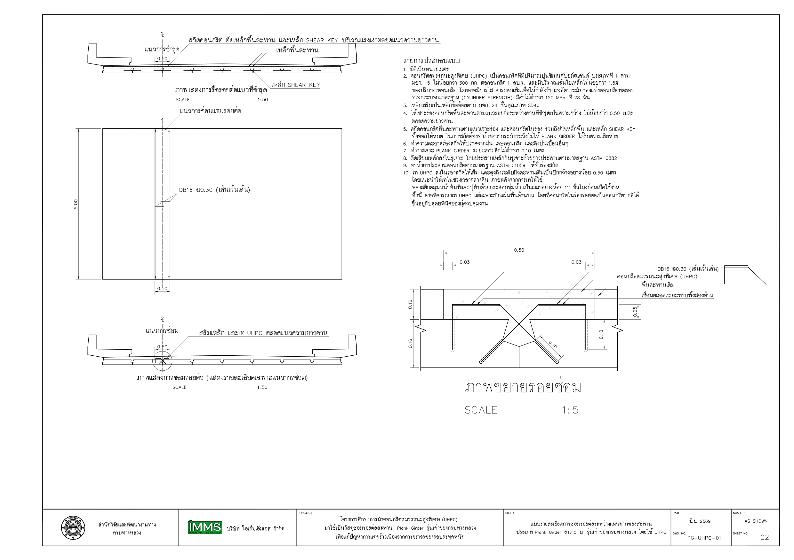
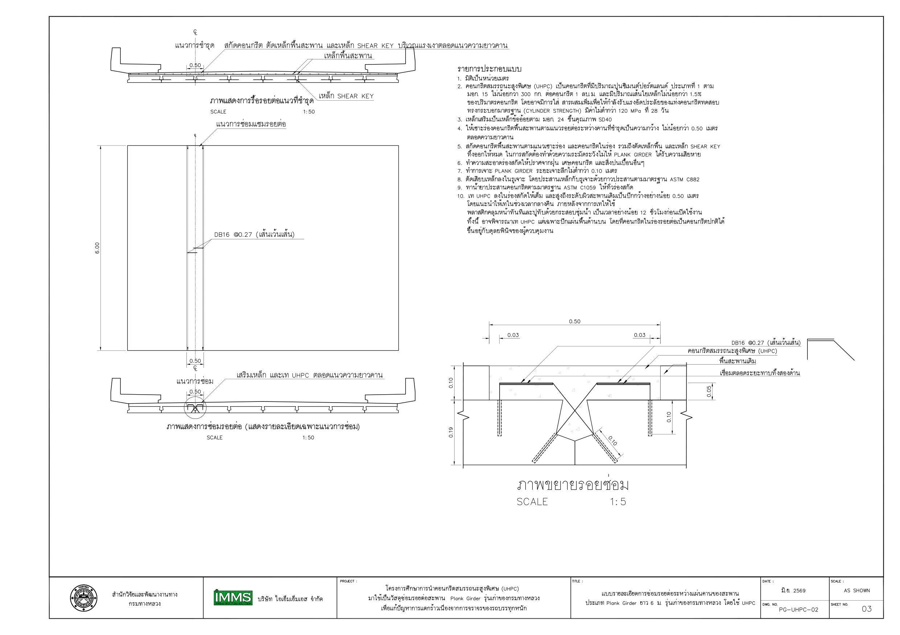
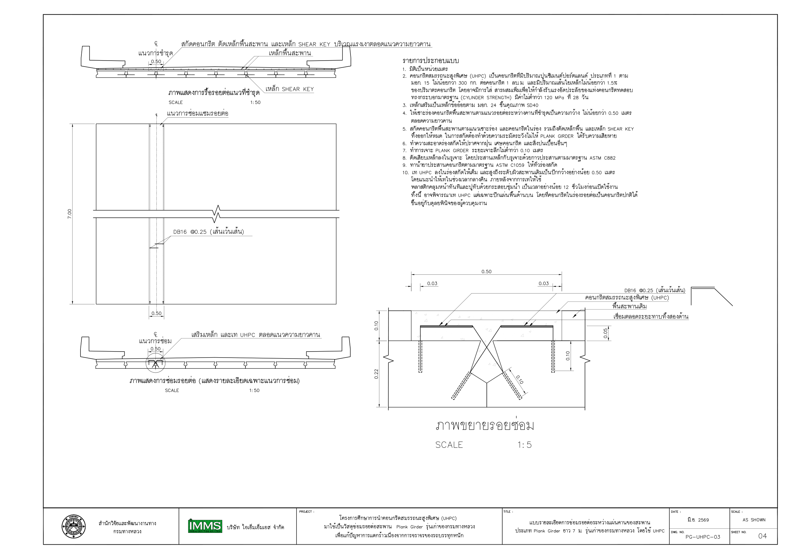
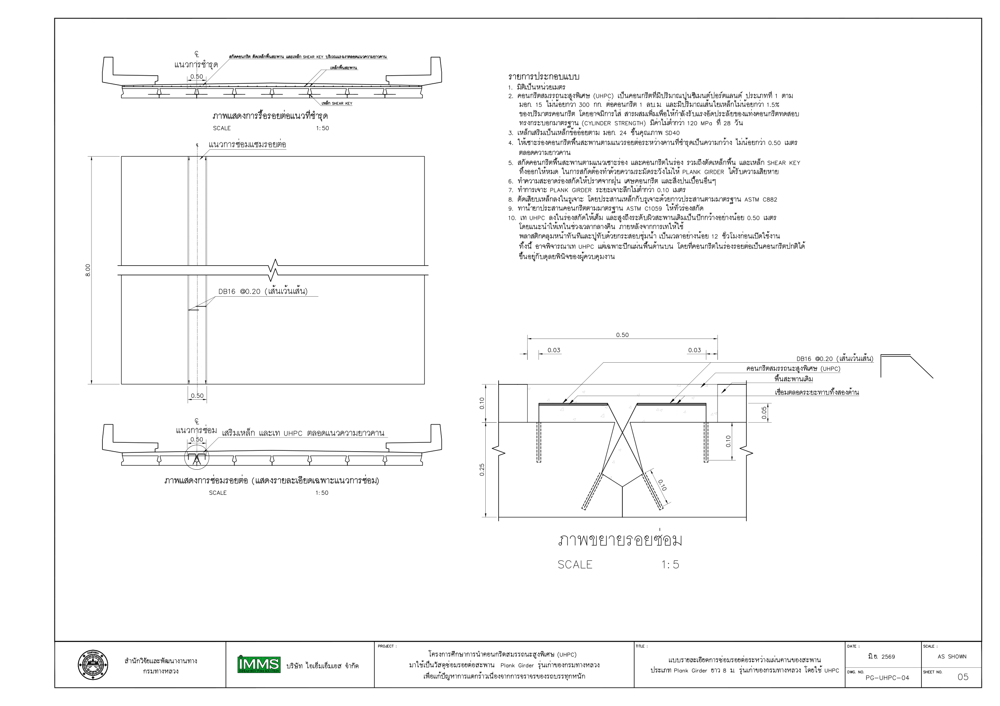
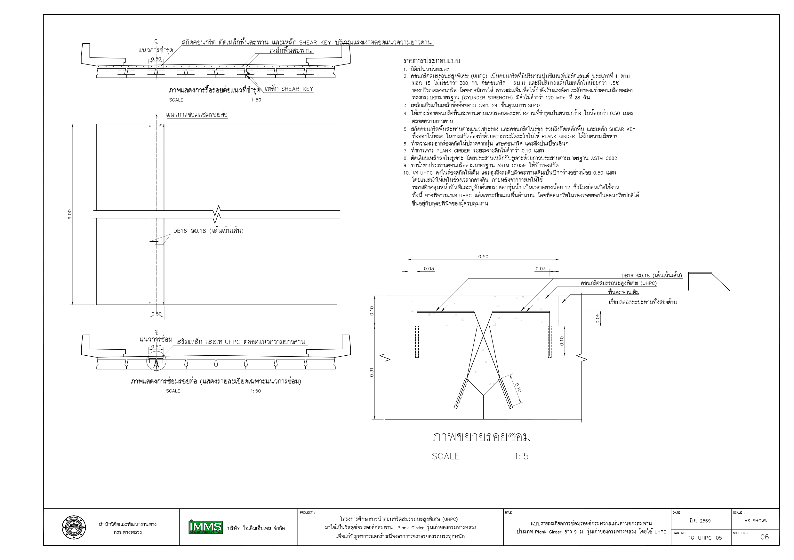
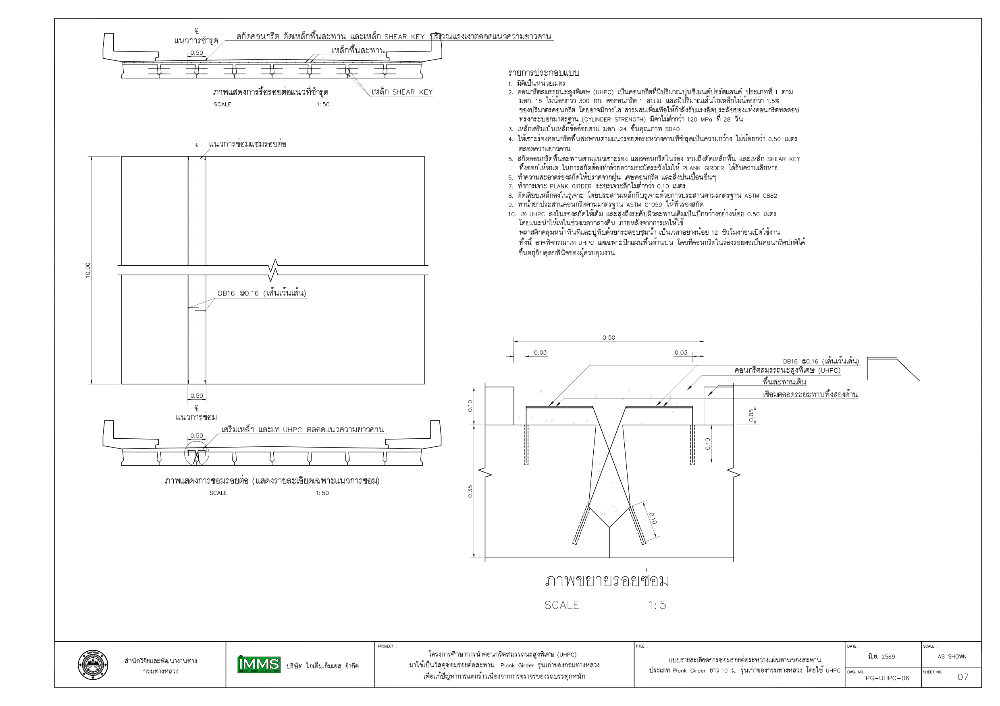
6. ความคุ้มค่าทางเศรษฐศาสตร์และผลกระทบเชิงมหภาค
การวิเคราะห์ความคุ้มค่าตลอดอายุการใช้งาน (Lifecycle Cost Assessment) และผลประโยชน์ต่อผู้ใช้ทางและงบประมาณแผ่นดิน
เปรียบเทียบต้นทุนค่าวัสดุ (บาทต่อลูกบาศก์เมตร)
ราคาต้นปี 2569*UHPC ที่กรมทางหลวงพัฒนาขึ้นคิดเป็นเพียง 0.63 - 0.70 เท่าของราคา Non-shrink Grout สำเร็จรูป
ประหยัดงบประมาณซ่อมบำรุงในระยะยาว
แม้คอนกรีตปกติจะมีราคาวัสดุเริ่มต้นต่ำกว่า แต่ต้องซ่อมบำรุงซ้ำทุก 1-3 ปี ขณะที่ UHPC มีอายุต้านทานความล้าสูงกว่า 6 เท่า ทำให้ลดค่าใช้จ่ายการซ่อมตลอดอายุสะพานลงได้มากกว่า 50%
ลดความสูญเสียทางเศรษฐกิจจากการปิดทาง
การรื้อเปลี่ยนคานต้องปิดสะพานนานหลายสัปดาห์ การใช้ UHPC ซ่อมรอยต่อช่วยให้เปิดการจราจรได้ภายใน 15 ชั่วโมง ลดปัญหาการจราจรติดขัดและการสูญเสียพลังงานของประชาชน
ส่งเสริมนโยบายคาร์บอนต่ำ (Net Zero)
การยืดอายุการใช้งานสะพานเดิมโดยไม่ต้องทุบทิ้งสร้างใหม่ ช่วยลดการใชวัตถุดิบธรรมชาติ ลดขยะจากการรื้อถอน และลดก๊าซเรือนกระจกจากการขนส่งและการก่อสร้าง
"นวัตกรรมที่พร้อมใช้งานจริง ทั่วโครงข่ายทางหลวงแห่งประเทศไทย"
โครงการวิจัยนี้ได้พิสูจน์แล้วทั้งในระดับวัสดุศาสตร์ แบบจำลองไฟไนต์อิลิเมนต์ และการทดสอบขนาดเท่าจริงในห้องแล็บ ว่าการใช้ UHPC ซ่อมรอยต่อสะพาน Plank Girder รุ่นเก่า เป็นแนวทางที่คุ้มค่า แข็งแรง ทนทาน และสามารถผลิตหน้างานได้จริงด้วยเครื่องมือที่เข้าถึงง่าย พร้อมยกระดับมาตรฐานความปลอดภัยของสะพานไทยอย่างยั่งยืน